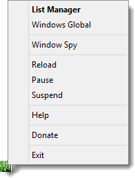

Menu item of figure 1 are described below.

List Manager - Launches the Hotlist.
Windows Global - This menu will change name depending on the profile that is currently active. Clicking this menu item will launch Profile Swap.
Window Spy - Launch Window Spy Application.
Reload - This menu item will reload AutoHotkey Snippit.
Pause - Pauses or un-pasues AutoHotkey Snippit. Turning on pause will freeze the current thread.
Suspend - Suspends or Resumes all hotkeys and hotstrings. There may be some exceptions. See AutoHotkey Documentation for more information on Suspend.
Help - Launches this help file.
Donate - Buy some developer coffee.
Exit - Exits AutoHotkey Snippit which will stop all hotkeys and hotstrings. If AutoHotkey Snippit is not running you can still run Profile Swap or Hotlist from the start menu. Any changes made will take effect next time AutoHotkey Snippit is started.
Both Profile Swap and Hotlist can still be run if AutoHotkey Snippit is not running, Paused, or Suspended. However if AutoHotkey Snippit is running it may be restarted after making changes with Profile Swap or Hotlist.